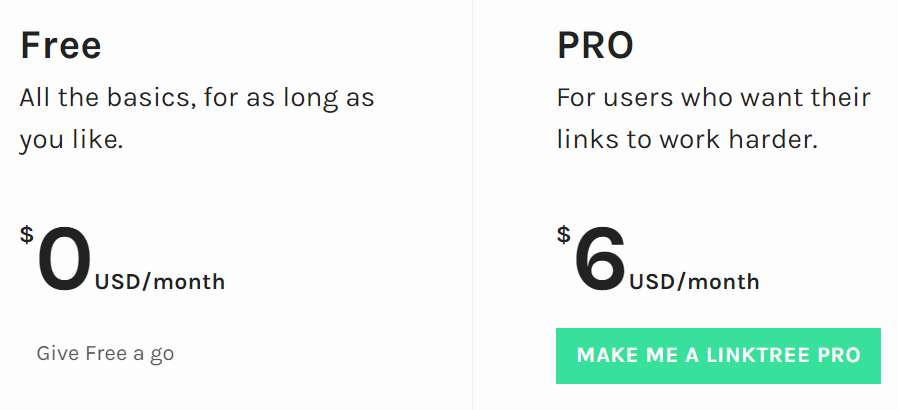
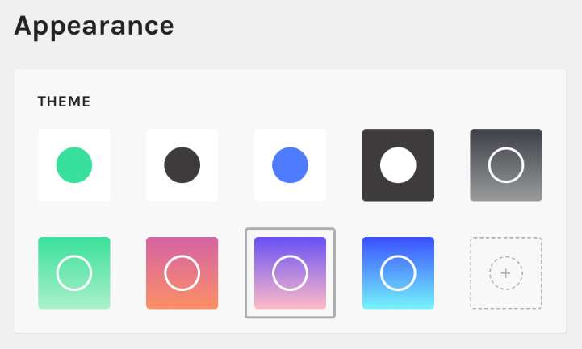
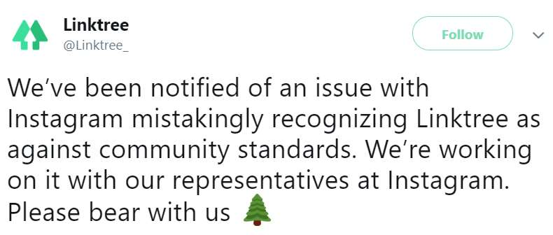
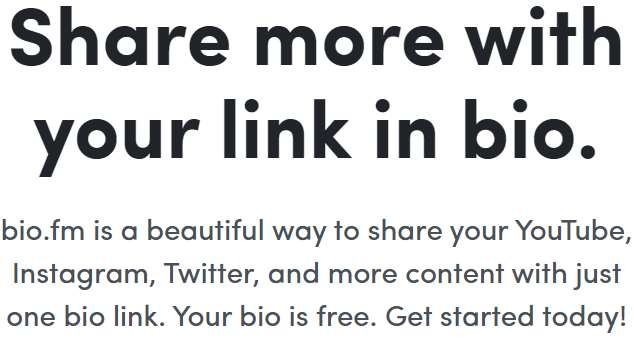

Have you tried Linktree yet? Wondering if it’s a safe tool to use for your Instagram accounts? There are some things that you need to know about this tool before you take the plunge.
In this Linktree review, I’ll share my insights; how it works, the benefits, pros and cons, and if it’s something we recommend. If you were thinking about trying Linktree, take a minute to read this article first.
Let’s get started.
What is Linktree?
Linktree is a tool that is designed to enhance your Instagram bio links. You can use it to design a kind of landing page for your Instagram links.
As we know, Instagram only allows one hyperlink in your bio. That can be quite limiting for marketers who have multiple product pages. That’s the problem Linktree tries to solve. Overall, the concept is rather simple.
What You Need to Know About Linktree
What Linktree does is basically create a mobile-optimized page that you can personalize with links, backgrounds, colors, and custom text. Think of it as a mini-website builder, with a wide range of customization options. It’s not a bot, and it won’t grow your audience. It’s more like an optimization tool.
Another thing to keep in mind is the PRO version adds even more features, such as the ability to edit the header of your page, email sign-up integration, remove the Linktree logo, complete customization, add thumbnails, and much more. The free version is rather limited.
The good news is there are no link-limits on the Free account. You can add as many as you want.
A Quick Linktree Review
In a rush? Here’s what you need to know.
Linktree is a decent tool for adding more links to your Instagram bio, but when compared to other tools, we feel like it doesn’t have nearly as many features.
At the moment, we don’t recommend Linktree. However, we do recommend an alternative tool called Bio.fm. It does basically the same thing as Linktree but with more features and design options.
It’s also free, check it out.
How Much Does It Cost?

Right now, the tool has two memberships: Free, and PRO. The Free version is free forever but limited in a number of ways.
The PRO version grants access to all features and customization options, it costs $6 a month. At least, it’s a budget-friendly way to optimize the appearance of links in your Instagram bio.
Features
Here are some features you should know about.
Choose a Theme

The tool has 10 preset themes with color configurations.
PRO users can create their own custom color profiles. In the custom profile section, you can change the background, link color, button style, and gradients. Most people will use the preset themes because those are all that’s available to free members.
Another nice feature is the ability to see a live preview of your theme selection working with your links, making it easier to choose a theme that best matches your brand.
Track Views and Clicks
For the data geeks, Linktree has an option to track views and clicks. The data is organized into a neat chart, making it easy to compare views and clicks. There’s also a click-through ratio. I like the analytics, I think it’s quite useful.
Add Pictures and GIFS for Backgrounds
Although this feature is exclusive to the PRO membership, it’s worth talking about. Users can use their own custom pictures as a background, as well as GIFS. The tool also supplies you with over 500,000 royalty-free images to use.
Email List Integration
Another PRO feature is email integration. With this feature users can add their sign-up forms directly to their Linktree page, so visitors can easily register. It makes building a list much easier. The only problem is this feature only works with Mailchimp at the moment.
Rearrange and Manage Links
The tool makes it really easy to rearrange and edit links. To move a link, simply drag and drop it to the desired location. Likewise, to edit, simply click the edit icon and you can change the title and website destination in a couple of clicks. Very cool.
Is Linktree Banned from Instagram?
There have been some rumors circulating that Linktree has been banned from Instagram. It looks like Instagram is cracking down on these kinds of tools (for reasons we’ll mention below) but, at the moment, Linktree is not banned from Instagram.
Linktree Pros
Here’s what we liked about this tool.
Easy to Use and Simple 👍
Create an account in seconds, claim your custom Linktree, and start adding lists. It really only takes a few minutes to build a simple page. The preset templates are usually sufficient for basic links.
Free Forever Account 👍
Another thing I really liked is the option to use the free account, forever. There are limitations, of course, but it provides most of the basic features.
It’s great for small Instagram accounts. Granted, the paid version is also incredibly budget-friendly, it only costs $6 a month. That’s cheaper than Netflix!
Advertise Multiple Offers in One Place 👍
Now, this is probably the main reason people use Linktree. It gives users the option to advertise multiple offers, on separate links, instead of swapping out the Instagram bio link over and over. Most marketers are quite happy with this feature and it works quite well.
High Level of Customization 👍
While the basic free membership has a decent level of customization, the Pro membership adds a whole new level.
You can customize almost every aspect of the page, and include basically whatever content you want, as long as their within the guidelines. Not to mention GIFS and button animations!
The Company Uses Their Own Tool 👍
While this not a major highlight, it’s worth talking about. It’s always nice to see a company that actually uses their own tools.
Linktree uses their own service on its own Instagram profile, which has over 22.9K followers. And they haven’t been banned. That’s a good sign.
Linktree Cons
But there are some downsides, too.
Performance Issues 👎
Since these mini-web pages are hosted on the company’s servers, it requires a lot of resources to keep all the pages up at all times. There are lots of people complaining online about the server performance, claiming their link-pages won’t load, or deliver an error.
To be fair, the company does work hard to improve software performance, and they’re also relatively active on social media. But it’s still worth mentioning that you might encounter some performance issues.
Instagram Is Cracking Down on Bio-Link Tools 👎
First things first, although these tools aren’t exactly against Instagram’s policies, they create a kind of loophole to bypass Instagram rules.
And a lot of people are taking advantage of that loophole. For example, some people use Linktree to redirect people to inappropriate websites.
A while back, Instagram started marking all Linktree links as spam. When you would try to load one of the links through Instagram, it would say the links are not allowed. Naturally, a lot of Linktree members weren’t happy about it.

The company did send out a notice on Twitter to let people know they’re working to resolve the issue. They seem to be pretty active on social media.
It seems like everything is working once again, but I feel like it’s just a matter of time before Instagram blocks the links again. It wouldn’t be great if you paid for a tool that got banned.
Your Website Conversion Rate Suffers 👎
When it comes to marketing online, you have to realize people are rather impatient. The goal is to make it as easy as possible for people to view your offer, in as few clicks as possible.
Every extra click is like an extra step and most people will close the page after one or two clicks. If they can’t get it now, they don’t want it.
So what Linktree does is basically create an extra gap between your audience and your website. Instead of linking directly to your website on your Instagram bio (link most brands do) you send people to your Linktree page.
From there, they have to click again to visit your website. Not to mention this also has a negative impact on your website’s search engine optimization.
Is There a Better Alternative?
While I wouldn’t say Linktree is a bad tool, it’s not one of our recommended tools at the moment. The reason for that is because we know of a much better tool that accomplishes the same goal with even more features. What I’m talking about is Bio.fm.
P.S. wondering what other Instagram tools we recommend? Take a look at this list.
What is Bio.fm?

Bio.fm is probably one of the coolest Instagram bio-link tools I’ve had the pleasure of testing out.
It also makes a mini-web page for your links but instead of only supporting text-buttons, Bio.fm supports all kinds of apps, including YouTube videos, Spotify, Soundcloud, and much more.
One of the features I liked most about Bio.fm is the grid-view. You can customize the grid layout or remove it and display one featured block.
Either way, the way it is worth checking out, and I feel like it offers more features than Linktree. The price is about the same as Linktree.
So if you’re looking for a good tool to handle your Instagram bio links, I highly recommend Bio.fm. Linktree is worth a look too, but I feel like it doesn’t have nearly as many features as Bio.fm.
Click here to create a free account.
Thanks for taking the time to read this Linktree review. Hopefully, now you understand how the tool works and you’re aware of a better alternative tool.


{kind=link}